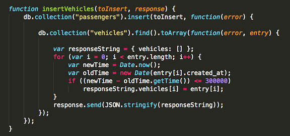

I have been hired to find the security vulnerabilities in James Kaufman's server-side implementation of the notuber app, which uses Heroku. This product helps passengers find the closest driver, and all drivers, and drivers to find the closest passenger, as well as all passengers. Furthermore, this product stores the location and username of all passengers and drivers who are using this app in a Mongo database.
I will be using curl in order to perform my pen testing. curl has limitless options of performing penetrations, including XSS, sending HTTP POST requests to a server, and injecting data into the database. Burp will also be used to try and alter request and response headers and bodies.
This product is vulnerable to many penetrations. The most noticeable being that it is extremely susceptible to hackers writing their own code that is executed by the product. Due to this, hackers can redirect the page, steal user's information, force the user to download viruses and so forth. As well, the product has severe confidentiality issues as anyone has access to every passenger's information, including their location, as well as all driver's that have used the product in the past 5 minutes. This will cause a serious issue when the product grows to a larger scale. Finally, the product is vulnerable to accessbility inhibitors as anyone can request vehicles/passengers as much as they want, restriction-free. This leaves the potential for saturating the fields of user's with fake users, rendering the product useless.
1.
Issue: Database injection using XSS.
Location: On page 'http://serene-ocean-41337.herokuapp.com' which is the
'/' path of the product.
Severity: High. This vulnerability allows any JavaScript to be stored
as an element in the database, resulting in the scipt to be executed
when the client recieves the response from the server. For example,
the script could redirect the page, take the client's cookies, expose
all of the databses data, etc.
Description: This was found in the app.get('/', ...) function in the
index.js file. Since this function creates an HTML file and sends
it to the client without any sanitization of data, it is extremely
vulnerable and can be exploited within the username, lat or lng
object values. The function is displayed here:
Proof:
Resolution: Sanitize input from HTTP POST requests to the database
by converting special characters to spaces. As well, make sure to cast
the lat and lng values inputted to be floats to avoid multiple places
of potential penetration.
2.
Issue: Bad design pracice exposing user coordinatess.
Location: In the insertVehicles function, as well as the
home page of the product - 'http://serene-ocean-41337.herokuapp.com'.
Severity: High. This vulnerability allows anyone to get access to the
location of all passengers and when they were there as well as all
drivers within the past five minutes. This should be confidential
information, but anyone with knowledge of the POST address or the URL
of the home adress of the product has access to this private data.
Description: This was found in both the insertVehicles
function as well as the app.get('/', ...) function. When anyone
sends an HTTP POST request, the server responds with all of the data
of the drivers active in the past five mins if the user requesting was
a passenger and vice versa if a driver was requesting. As well,
on the home page of the product, all passengers who have ever used this
ride-service will have their coordinates exposed and when. Due to this,
anyone could find patterns in certain user's schedules and potentially
harm them. Here is the function that posts all passengers information:
Here is the function posting the driver's data:

Proof: All passnegers information:
Driver's within the past 5 minutes information:
Resolution: Do not have a page that is public and contains all of the
user's data. As well, the server should have a whitelist of specific
domains that have access to the server data.
3.
Issue: Bad programming practice not restricting number of requestst
from a single domain.
Location: In the HTTP POST to
'http://serene-ocean-41337.herokuapp.com/rides'
Severity: Low. This vulnerability has the possibility to overload the
server if there was a coordinated DoS attack on the server. However,
with only one user making the attack, it just creates severe accessiblity
issues.
Description: This was found in the app.post('/rides', ...) function.
A malicious user can create a script to use HTTP POST to make hundreds
of requests per second, saturating the server with fake requests,
ultimately rendering the product useless as drivers and passengers
may not be able to find real passengers or drivers for their service.
Proof:
Resolution: Only allow a few requests per minute from a given domain.
This prevents any type of attempt at an overload, even if the hacker
is using proxies.
For the future, the creator of the product should sanitize all data that is inputted to the database which is cost free and a very easy thing to do. All that is needed is one check that converts special characters into spaces. This prevents many XSS attacks. As well, the creator should try to whitelist domains that can post data and recieve data to prevent exposure of client's confidential data and try to prevent DoS attacks.